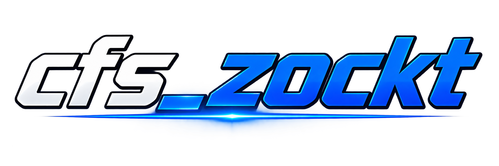

Goal, Counter, Timer, Chat und Kamera/Overlay besitzen geführte Schnellstarts. Schnellstarts veröffentlichen niemals automatisch.
CREATOR SUITE · STREAM. COMMUNITY. CONTENT.
DEINE CREATOR-ZENTRALE
FÜR STREAM & CONTENT.
cfs_zockt bündelt Widgets, interaktive Games, Creator Tools und Desktop-Steuerung in einer Plattform. Verständlich für den Einstieg, mit technischer Tiefe für fortgeschrittene Setups.
FREE Plan verfügbar
Keine automatische Zahlung
Keine Zahlungsdaten für den Einstieg

cfs_zockt
TOGETHER WE PLAY BIGGER
WIDGETSbauen & testen
GAMESCommunity einbinden
LAUNCHERDesktop verbinden
SYSTEM WIRD GEPRÜFTcfs_zockt Creator Suite · Production
VON TIKTOK HIER?
HIER GEHT'S DIREKT WEITER.
Du kommst von einem cfs_zockt Clip oder Stream? Öffne die Creator Suite, spring zur Community oder starte kostenlos mit einem Creator Account.
HEUTE IM PRODUKTWAS DU HEUTE SCHON
WAS DU HEUTE SCHON
NUTZEN KANNST.
Keine erfundenen Nutzerzahlen, Erfolgsquoten oder Marketing-Versprechen. Der Produktstand wird als verfügbar, Beta, Preview oder Roadmap sichtbar gemacht.
PRODUKTVORSCHAU · BEISPIELANSICHTDarstellungswerte in Vorschauen sind Beispiele und keine Live-, Nutzer- oder Erfolgsstatistiken.
Themes, Farbpaletten, Rahmen, Presets und eigene Markenfarben lassen sich auf Creator-Elemente anwenden.
Creator-Medien können hochgeladen und wiederverwendet werden. Bildbearbeitung bleibt nicht-destruktiv, damit das Original erhalten bleibt.
Widgets lassen sich mit Layern, Sichtbarkeit, Safe Areas und mehreren Instanzen als Stream-Layout vorbereiten.
Veröffentlichte Widgets und Szenen besitzen Output-Pfade. Der Launcher verbindet lokale Creator-Werkzeuge mit dem Web-Workflow.
Beta-, Preview- und Roadmap-Bereiche werden sichtbar bezeichnet. Bezahlte Funktionen werden nicht künstlich freigeschaltet.
DEIN cfs_zockt SYSTEM
Willkommen zurück.
Deine Verbindungen werden geprüft.
Account
Launcher
TikTok
Widgets
ZUM DASHBOARD
WIDGET STUDIOEINFACH BAUEN.
EINFACH BAUEN.
PROFI KONSTRUIEREN.
Der Einstieg bleibt geführt. Wer mehr Kontrolle benötigt, behält Zugriff auf Verhalten, Datenquellen, Layer, Szenen und Darstellung.
Widget bauen
- Vorlage
- Inhalt
- Design
- Position
- Effekte
- Testen
Ein klarer Weg vom Start bis zur Vorschau, ohne technische Details unnötig vor den Einstieg zu stellen.
Widget konstruieren
- Verhalten & Datenquellen
- Szenen & Layer
- Safe Areas & Layout
- Output & technische Kontrolle
Für Creator, die komplexe Setups bewusst konfigurieren und wiederverwenden möchten.
Direkter Einstieg: Manuelle Widgets funktionieren auch ohne TikTok-Verbindung. Du kannst zuerst gestalten und testen und TikTok später verbinden.
CREATOR SUITE
MEHR ALS NUR WIDGETS.
Die Module teilen sich Account, Creator-Kontext und Workflow, bleiben aber funktional getrennt. Du kannst mit einem Bereich beginnen und später erweitern.
Status, Verbindungen und Schnellzugriffe.
Creator-Inhalte und Konfiguration.
Widgets erstellen, testen und verwalten.
TikTok-Verbindung und Creator-Kontext.
Desktop-Verbindung und lokale Bridge.
Interaktive Community-Games.
Clips, Media und lokale Verarbeitung.
Erweiterter Plattform-Bereich in Vorschau.
LAUNCHER 0.42.0
WEBSITE UND DESKTOP ARBEITEN ZUSAMMEN.
Der Launcher übernimmt die Teile des Creator-Workflows, die lokal am PC laufen müssen. Er verbindet Device-Link, lokale Outputs und Creator-Werkzeuge mit der Plattform.
Creator verbindenWidget- & Scene-OutputLIVE-BridgeLokale Diagnose
LAUNCHER ANSEHENAKTUELLER STAND0.42.0
Atomare Settings-Speicherung, Backup, kontrollierte Recovery, serialisiertes Action-Polling und verbesserte Logout-/Shutdown-Pfade.
COMMUNITYInteractive Games
Community-Aktionen können in eigene Stream-Games einfließen. Der Bereich nutzt den bestehenden LIVE- und Regel-Workflow.
GAMES · CREATOR
MEHR INTERAKTION IM STREAM.
Games erweitern den Creator-Workflow um Community-Interaktion. Wir versprechen dabei keine künstlichen Engagement-Steigerungen oder erfundene Erfolgswerte.
GAMES ANSEHENACCOUNT & EINSTIEGKOSTENLOS STARTEN.
KOSTENLOS STARTEN.
OHNE BLINDVERTRAUEN.
Neue Creator-Konten starten im FREE Plan. Beim Erstellen des Accounts werden keine Zahlungsdaten abgefragt – und eine Registrierung löst keine automatische Buchung aus.
Creator-Name, E-Mail und Passwort reichen für den normalen Accountstart. Bezahlte Pläne bleiben ein separater Schritt.
Lange Passphrasen, optionales TOTP-2FA, Recovery-Codes und Passkeys stehen als zusätzliche Schutzschichten bereit.
Aktive Sitzungen lassen sich verwalten. Accountdaten können exportiert und das Konto über den geschützten Account-Lifecycle gelöscht werden.
Die Registrierung erstellt kein kostenpflichtiges Abo. Billing- und Upgrade-Schritte bleiben getrennt vom kostenlosen Einstieg.
Erst ansehen, dann entscheiden.Die öffentlichen Produktseiten funktionieren ohne Creator-Account.
SICHERHEIT & TRANSPARENZ
KONTROLLE STATT
BLINDVERTRAUEN.
Account-Schutz, Sessions, TikTok-Verbindung und Datenkontrolle werden als konkrete Funktionen beschrieben. Sicherheit ist ein laufender Prozess.
TOTP, Recovery-Codes, Passkeys und lange Passphrasen ergänzen den normalen Login.
Aktive Sitzungen anzeigen, einzeln widerrufen oder auf allen Geräten abmelden.
Verbundene TikTok-Autorisierung kann im Account kontrolliert und wieder entfernt werden.
Accountdaten exportieren und den Account über den geschützten Lifecycle löschen.
KEIN 100-%-VERSPRECHENWir behaupten keine absolute Sicherheit und zeigen keine erfundenen Bewertungen, Nutzerzahlen, Preise oder Merch-Bestellungen.SICHERHEIT IM DETAIL →
PLÄNEFREE STARTEN.
FREE STARTEN.
SPÄTER ERWEITERN.
Öffentliche Preise werden erst gezeigt, wenn sie tatsächlich festgelegt und technisch aktiviert sind. Registrierung löst keine automatische Zahlung aus.
Creator Account, Basis-Tools und Einstieg in die Creator Suite.
KOSTENLOS STARTENErweiterte Creator-Funktionen und Games. Aktivierung nur mit realer Billing-Konfiguration.
Erweiterte Plattform-Funktionen wie NEXUS. Keine künstliche Freischaltung.
ROADMAPKLARER STATUS FÜR
KLARER STATUS FÜR
JEDEN PRODUKTBEREICH.
Ein Feature wird nicht als fertig bezeichnet, nur weil die Idee oder technische Basis existiert.
Kernbereiche mit nutzbaren Produktflows.
Im Ausbau und sichtbar als noch nicht final gekennzeichnet.
Geplante Ausbaustufen ohne falsches Fertig-Versprechen.
CREATOR-EMPFEHLUNGEN
PASSENDE TOOLS.
KLAR GEKENNZEICHNET.
Empfehlungen erscheinen hier nur, wenn sie bewusst aktiviert wurden. Werbung und Affiliate-Links werden sichtbar gekennzeichnet.
✓ Nutzen vor Werbedruck
✓ Werbung/Affiliate klar markieren
✓ keine erfundenen Rabatte oder Preise
✓ nur aktiv freigeschaltete Empfehlungen
COMMUNITY & FEEDBACKMITMACHEN STATT
MITMACHEN STATT
NUR ZUSCHAUEN.
Feedback und öffentliche Reviews werden nur mit echten Eingaben gefüllt. Leere Flächen werden nicht mit erfundenen Testimonials ersetzt.
BEREIT FÜR DEIN SETUP?
STARTE IM FREE PLAN.
Für die Registrierung werden keine Zahlungsdaten abgefragt. Keine automatische Zahlung.